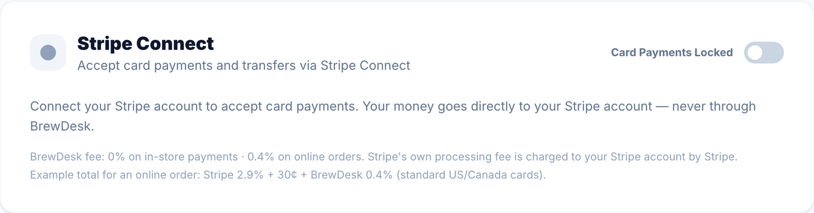
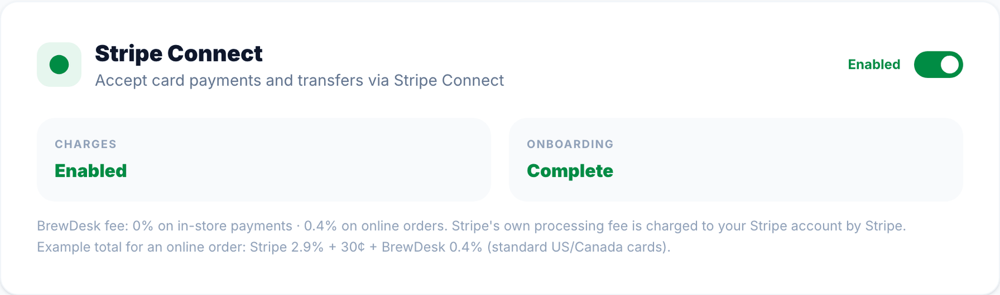

7카드 결제 준비 · Stripe 연결
카드 결제와 온라인 주문 결제를 받으려면 매장 이름으로 된 Stripe 계정을 BrewDesk 에 한 번 연결합니다. 보통 15분, 서류 검토가 걸리면 영업일 1~2일 걸립니다. 결제 대금은 BrewDesk 를 거치지 않고 매장 Stripe 계정으로 바로 들어갑니다.
Settings › Payments 화면을 아래로 내리면 Stripe Connect 카드가 있습니다. 카드 오른쪽의 스위치를 켭니다(연결 전에는 Card Payments Locked(카드 결제 잠금)로 표시됩니다). 이 카드에는 따로 연결 버튼이 없고 스위치가 연결 버튼입니다. 대표(Owner) 계정으로 로그인해야 보입니다.
나라별로 되는지 먼저 확인
BrewDesk 를 판매하는 13개국 기준입니다. 카드 리더(Stripe Terminal)까지 되는 나라가 있고, 온라인 · QR 카드 결제만 되는 나라, 아예 안 되는 나라가 있습니다.
| 구분 | 나라 | 안내 |
|---|---|---|
| Stripe 계정 + 카드 리더 모두 가능 | 싱가포르 · 호주 · 뉴질랜드 · 일본 · 말레이시아 · 미국 · 캐나다 (퀘벡 주는 BrewDesk 미판매) | 이 장의 순서대로 연결합니다. |
| Stripe 계정만 가능 (카드 리더 불가) | 태국 · 아랍에미리트 | 온라인 주문 · QR 카드 결제만 됩니다. 매장 안 카드 리더는 쓸 수 없습니다. |
| Stripe 미리보기 (Stripe 영업 문의 필요) | 인도네시아 | 일반 가입은 사실상 안 됩니다. 아래 「안 되는 나라」처럼 쓰세요. |
| Stripe 불가 | 베트남 · 아르헨티나 · 남아프리카공화국 | 남아프리카공화국은 Stripe 대신 Paystack 망을 쓰는데 BrewDesk 는 연동하지 않습니다. |
2026-10 기준 · Stripe 사정에 따라 바뀔 수 있음. 출처: stripe.com/global · docs.stripe.com/terminal/payments/regional
시작 전에 준비할 것
Stripe 계정의 나라는 처음 연결할 때 매장 정보에 설정된 나라로 고정됩니다. 연결한 뒤에 매장 나라를 바꾸면 안 됩니다. 나라가 틀렸다면 연결을 해제(Disconnect)하고 다시 연결해야 하므로, 연결 전에 Settings › Store Info 에서 Country(나라) · 주소 · Store Name(매장 이름)이 실제와 같은지 확인합니다. 매장 이름은 Stripe 의 표시 이름으로 넘어갑니다.
Stripe 가 매장과 대표자를 확인합니다. 아래를 옆에 두고 시작하면 한 번에 끝납니다.
| Stripe 가 요구하는 것 |
|---|
| ☐ 사업자 정보 — 사업자 등록번호(싱가포르 UEN · 미국 EIN · 호주 ABN · 말레이시아 SSM 등록번호 등), 등록된 사업자 이름 · 주소, 사업 형태(개인 · 법인 — 등록 기록과 같게) |
| ☐ 업종 · 매장 설명, 웹사이트 또는 SNS 주소 (없으면 매장 설명으로 대신) |
| ☐ 카드 명세서에 표시될 이름 — 손님 카드 명세서에 찍힐 매장 이름 |
| ☐ 대표자 본인 확인 — 신분증(+ 셀카), 생년월일 · 집 주소. 싱가포르는 Singpass 가 가장 빠릅니다. Singpass 를 못 쓰면 NRIC · FIN(Work Pass) · 여권 중 하나와 셀카로 확인하고, 대표자가 싱가포르 밖에 살면 여권만 받습니다. |
| ☐ 법인이면 지분 25% 이상 소유자 · 이사 정보 |
| ☐ 정산 계좌 — 매장(사업자) 명의의 그 나라 은행 계좌 |
| ☐ 사장님 본인 이메일(매일 보는 것 — 정산 · 분쟁 · 서류 요청 메일이 옵니다)과 휴대폰 실물(인증 코드 · 2단계 인증) |
① 매장이 아닌 다른 회사 · 다른 사람의 정보나 이메일로 Stripe 를 만들기 — 대금과 계정 주인이 그 사람이 됩니다.
② 연결한 뒤에 매장 나라 바꾸기.
③ 시험 삼아 연결 스위치를 껐다가 Disconnect 누르기 — 카드 결제가 바로 멈춥니다.
연결 순서

- BrewDesk 에서
Settings › Payments를 열고 아래쪽 Stripe Connect 카드의 스위치를 켭니다. Stripe 가입 페이지가 열립니다.

- 첫 페이지의 Email address 가 사장님 이메일인지 확인하고 Continue 를 누릅니다. 이미 Stripe 계정이 있으면 그 계정으로 로그인하고, 없으면 그 자리에서 새로 만듭니다. 이메일 · 휴대폰으로 오는 인증 코드를 입력하고, 봇 확인(그림 고르기)이 나오면 직접 풉니다.
- 사업 정보를 입력합니다 — 사업 형태, 등록번호, 사업자 이름 · 주소, 업종(음식점 · 카페), 웹사이트(또는 매장 설명), 카드 명세서에 표시될 이름. 이어서 대표자 본인 확인(신분증 · 싱가포르는 Singpass 버튼 또는 신분증 사진과 셀카)과, 법인이면 소유자 · 이사 정보를 입력합니다.
- 정산받을 은행 계좌를 입력합니다. 매장(사업자) 명의의 그 나라 은행 계좌여야 합니다.
- 입력 내용을 확인하고 제출합니다. 자동으로 BrewDesk 의
Settings화면으로 돌아옵니다. - 중간에 창을 닫았거나 Stripe 가 세션을 끊었으면 같은 Settings › Payments 로 돌아옵니다. 카드가 계속 Card Payments Locked 이면 아직 끝나지 않은 것입니다. 스위치를 다시 켜면 같은 Stripe 계정에서 멈춘 곳부터 이어집니다.
연결 상태 읽기

- 스위치가 켜지고 Charges 가 Enabled(활성), Onboarding 이 Complete(완료)로 보이면 끝입니다. 카드 결제와 온라인 주문 카드 결제를 받을 수 있습니다. 카드 리더가 되는 나라는 이어서 카드 단말을 따라 리더를 연결합니다.
- 스위치가 꺼진 채 Card Payments Locked 이면 연결이 끝나지 않았거나 서류 검토 중입니다. Stripe 가 서류를 더 요구하면 Stripe 가 보낸 메일이나 Stripe 대시보드에 무엇이 필요한지 나옵니다. 메일함을 확인하고, 서류를 낸 뒤 스위치를 다시 켜서 이어갑니다. 보통 몇 분, 검토가 걸리면 영업일 1~2일입니다.
수수료는 누가 받나요
- Stripe 결제 수수료는 Stripe 가 매장 Stripe 계정에서 직접 받습니다. 싱가포르 국내 카드 기준 3.4% + S$0.50 입니다(해외 카드는 추가 요금이 있습니다).
- BrewDesk 수수료는 매장에서 받는 결제는 0%, 온라인 주문만 0.4% 입니다.
- 온라인 주문의 수수료를 메뉴 가격으로 메우고 싶으면 QR 주문의 Online price increase(온라인 가격 인상)를 쓰세요. 매장 · 테이블 QR 가격은 그대로 두고 온라인 메뉴만 % 만큼 올립니다. 평균 주문이 S$8~20 인 매장은 10% 를 권장합니다.
연결한 다음
연결 해제는 시험 삼아 하지 마세요
연결된 카드의 스위치를 끄면 Disconnect Stripe? 확인 창이 뜹니다. 여기서 Disconnect(연결 해제)를 누르면 Stripe 연결 계정이 삭제되어 카드 결제가 바로 멈춥니다(현금 결제는 그대로 됩니다). 대표(Owner)만 할 수 있습니다. 나라가 틀려 다시 연결해야 하는 경우에만, 영업 중이 아닐 때 하십시오. 다시 연결하는 것은 언제든 가능합니다.